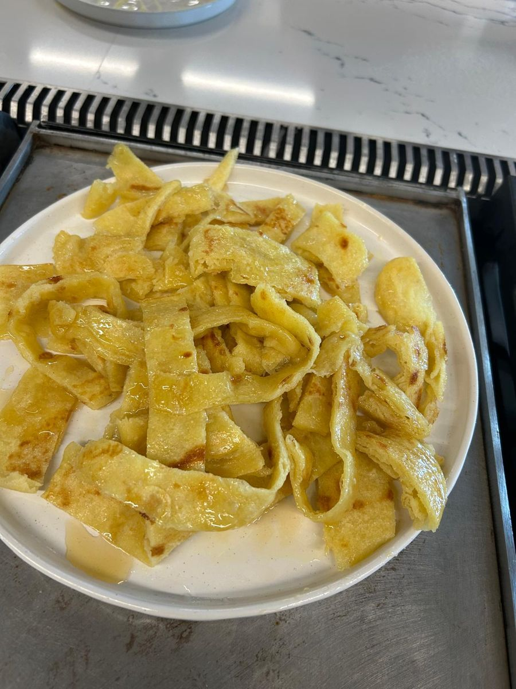
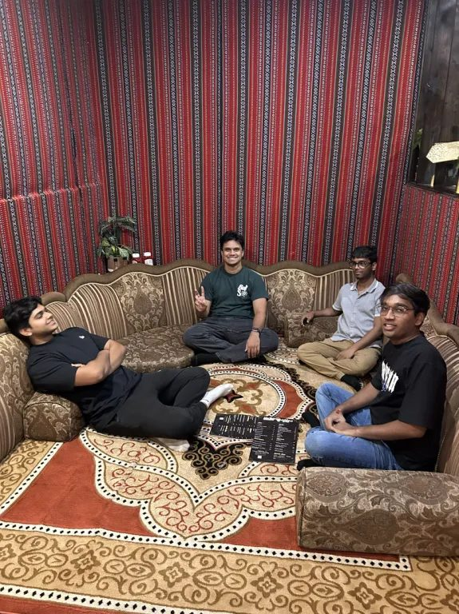

Stories From a Semester of Tasting the World
This course took me from a Syrian chocolate kitchen in Nova Scotia to a Moroccan tea tray in our classroom, a Gullah Geechee rice pot, and a carpet at a Yemeni restaurant in Tampa. These posts are where I tell those stories, and where I connect them back to my own move from India and to the Khaleeji region our group studied.
What We Carry With Us: Peace by Chocolate and the Sweetness of Starting Over
A Syrian family rebuilds a chocolate business in snowy Nova Scotia, and a son's dream of leaving takes me back to the day I told my parents I was moving to the US.

Squares, Not Circles: What a Moroccan Flatbread Taught My Indian Hands
Hand-stretching msemmen against years of rolling round chapatis, and learning why Moroccan tea is poured from so high above the glass.
Recipes That Crossed Oceans: The Many Kitchens Behind American Food
From Gullah Geechee red rice to chop suey, American food is a story of people carrying their kitchens with them, and I am one of them.

Half of My Lunch: What Sharing Food Teaches Us About Belonging
From trading bites at a school lunch table to sharing one platter on a majlis carpet, why breaking bread is how I make friends.

From Pearl Divers to Skylines: Why I Followed the Gulf Through Its Food
How a city that changed faster than almost anywhere still eats like its grandparents did, and why machboos became the dish I wanted to tell its story.

A Floor Seat at the Table: Our Visit to Abu Naji
Majlis seating, mild dips, and finally learning the difference between mandi and mabdi.